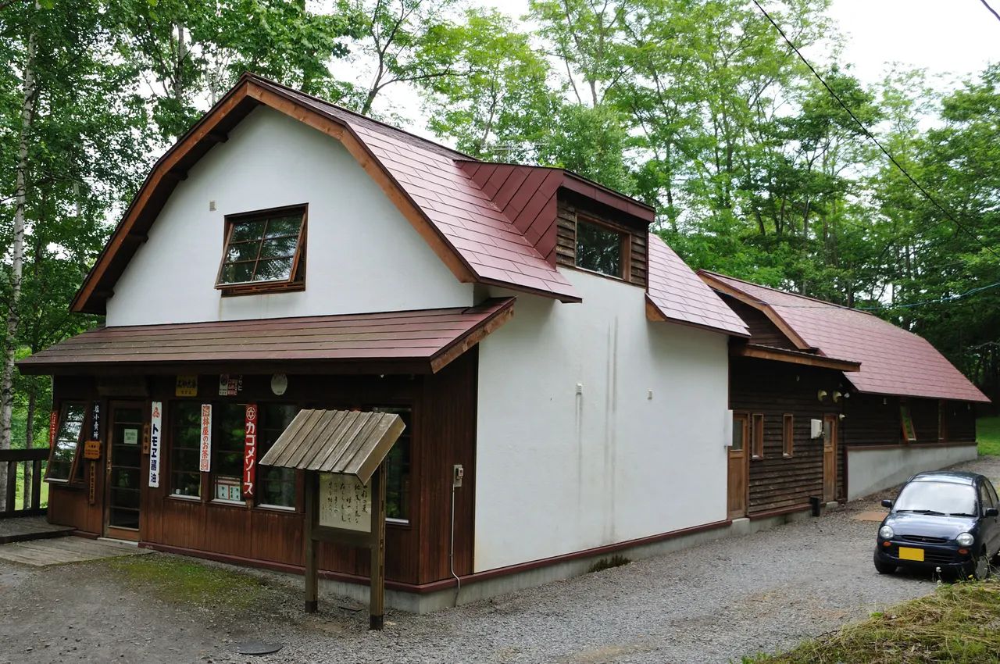
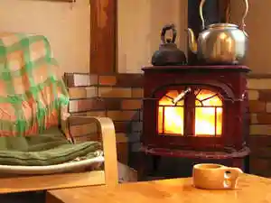
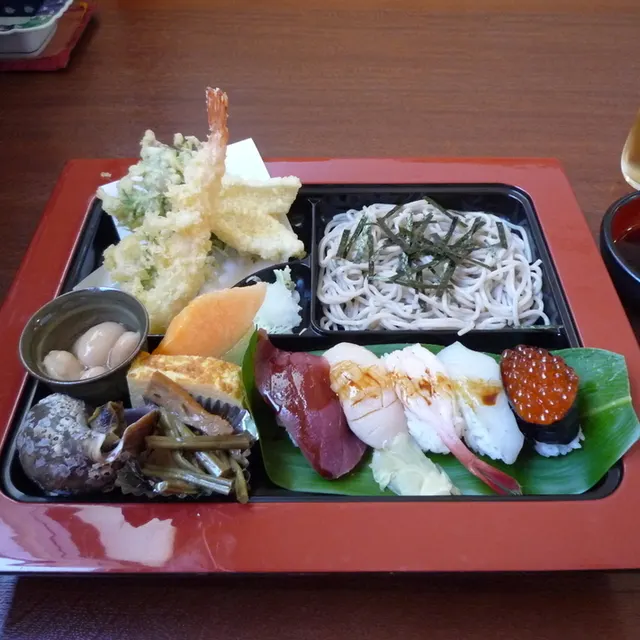
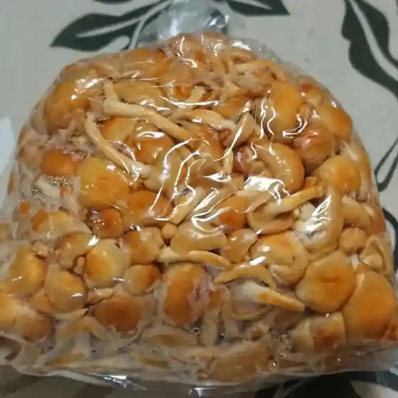
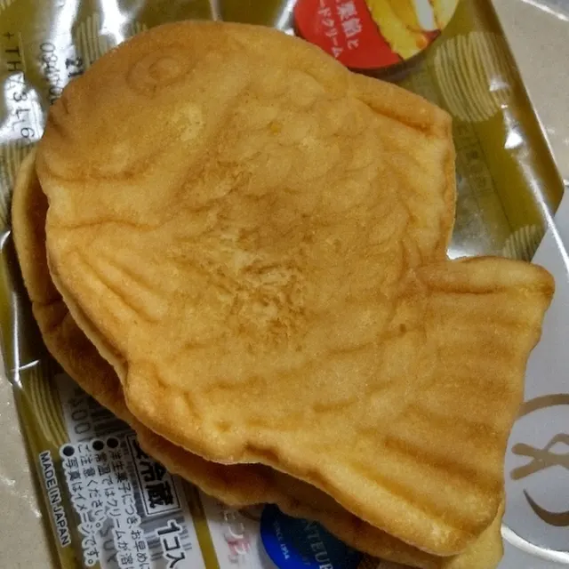
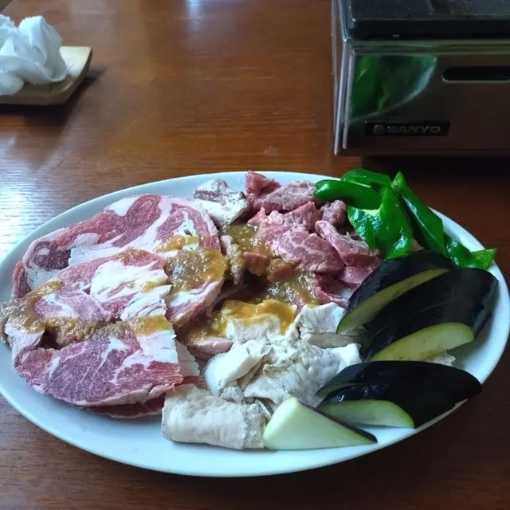
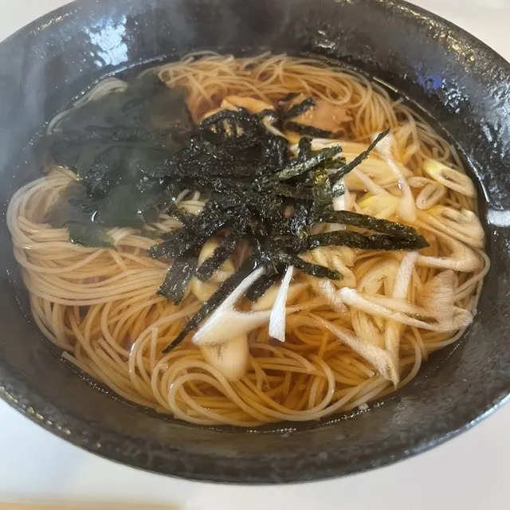
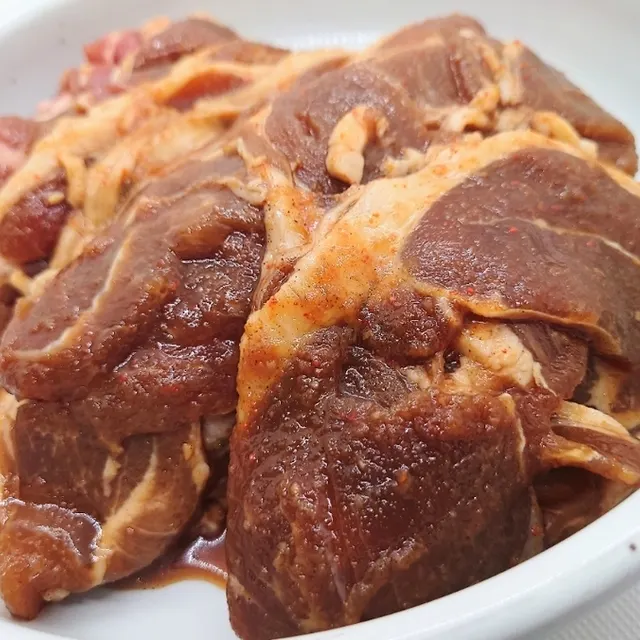
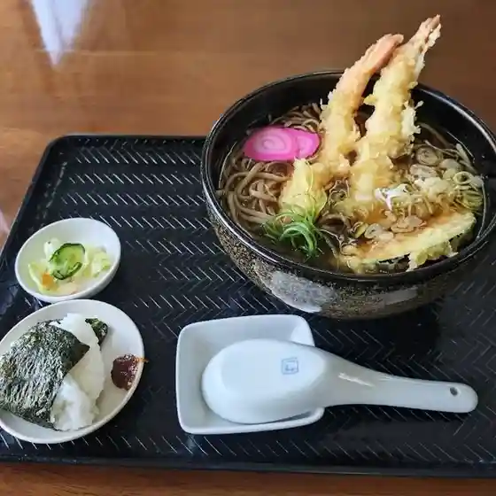
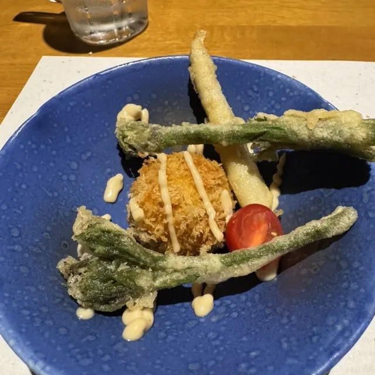

Wassamu
Wassamu · Hokkaido
Wassamu
Highlighted on the Hokkaido map.

Stay
研修館 楡
Kenshuu Kan Nire
塩狩ヒュッテ

Shiokari Hyutte
Dining
三徳寿し

Santoku Hisashi Shi
たむら菜園直売所

Tamura Saien Chokubai Tokoro
セイコーマート 和寒店

Seikoomaato Wassamu Mise
やき肉千松

Yaki Niku Sen Matsu
Cafe にれの木

Cafe Nireno Ki
金子精肉店

Kaneko Seinikuten
手打ちそば 光来

Teuchi Chisoba Kourai
冬音

Fuyu Oto
山のカフェ 覚礼
Yama No Kafe Kaku Rei
平和軒
Heiwa Ken
つたや食堂
Tsutaya Shokudou
わっさむ かぼちゃの王国
Wassamu Kabochano Oukoku
大勝食堂
Taishou Shokudou
塩狩ヒュッテ
Shiokari Hyutte
たちきゅう
Tachikyuu
フタバ屋
Futaba Ya
峠そば
Touge Soba
まる藤食堂
Maru Fuji Shokudou
お多幸
O Takou
和寒東山スキー場食堂
Wassamu Higashiyama Sukii Ba Shokudou